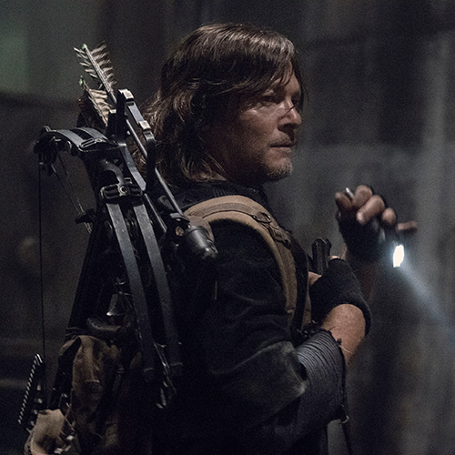
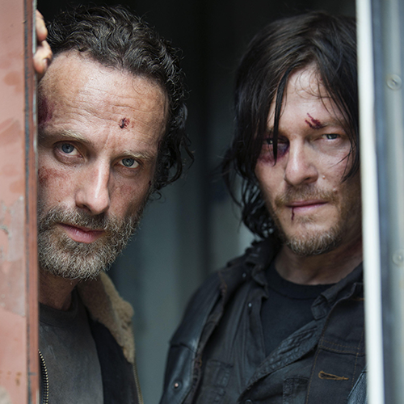
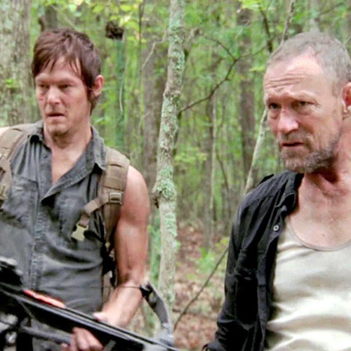
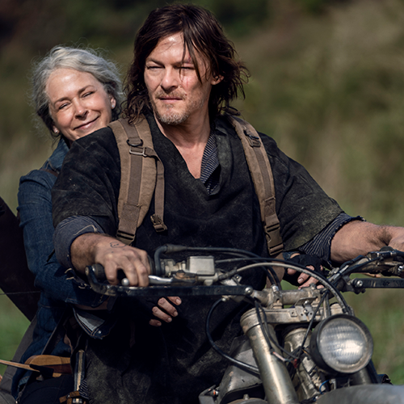
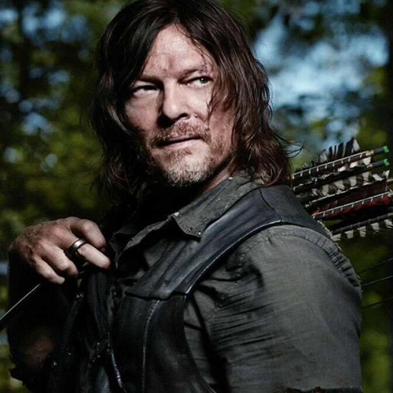

Daryl Dixon is a fictional character from the show called The Walking Dead.

ABOUT
Daryl Dixon is the deateragonist in the show. He has an older brother name Merle Dixon. Daryl is known for one of the remaing of the survivors of the outbreak in the show called The Walking Dead. Daryl is capeble of surviving alone but yet he choses to survive and help other people. With his unique hunting skills he is very useful in a lot of situiations such as finding lost people in his group. Hunting animals for food. Being able to get back to the camp. Daryl is strong mentally and physically. Daryl is discipline.
Relation
Rick Grimes

Merle Dixon

Carol Peletier

QUOTES
"We don't fight for revenge. We fight for our future."

Characteristics
Overall Daryl Dixon is a strong man. Mentally and physically. Daryl Dixon is loyal to the people who he cares about and to those who treats him right. This man has little words in the show but yet he shows so much about his character such as his loyalty to his people. How strong he is and tries his best to save his people. He always put his people first than himself. He has strong mindset and knows his around the places. He is easily the best character to find things because of his hunting ability.